INSTALACIÓN JEKYLL
Primero actualizamos el sistema.
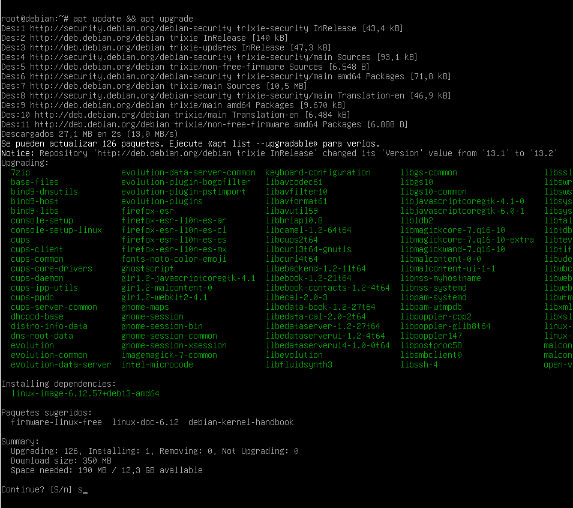
Utilizamos el siguiente comando para instalar Ruby y las herramientas necesarias para trabajar con gemas. Durante la instalación se recomienda no utilizar el usuario root.
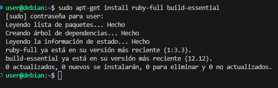
Configuramos el entorno para que las gemas se instalen de forma local.
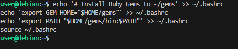
Descargamos la gema de Jekyll.
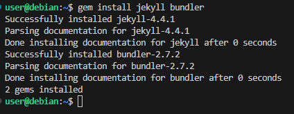
Con esto hemos completado la instalación local de Jekyll.
SITIO JEKYLL (MÍNIMA)
Local
Para crear un sitio web en local con Jekyll utilizamos los siguientes comandos.
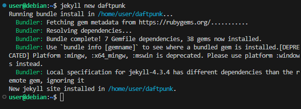
Accedemos a la carpeta del proyecto y personalizamos los datos que aparecerán en el sitio editando el archivo _config.yml.
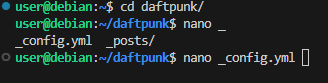
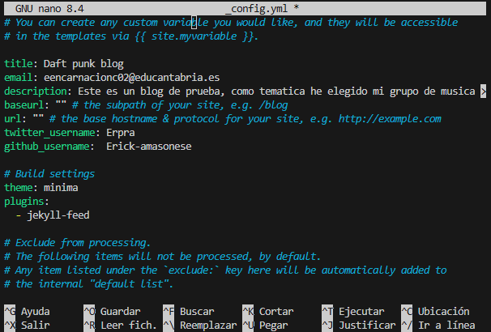
Guardamos y salimos.
Front matter en Jekyll
Antes de continuar personalizando páginas y entradas, es importante comprender qué es el front matter, ya que Jekyll lo utiliza para interpretar correctamente cada archivo.
El front matter es un bloque inicial, delimitado por ---, que aparece al comienzo de cualquier archivo Markdown del sitio.
Su función es proporcionar a Jekyll una serie de parámetros que describen cómo debe procesarse la página o el post.
Gracias al front matter podemos indicar, por ejemplo:
- el layout que debe usarse,
- el título mostrado en la web,
- la fecha de publicación,
- la ruta del archivo mediante permalink,
- categorías y etiquetas.
Sin este bloque, el archivo no sería procesado por Jekyll, teniendo eso en cuenta personalizaré front matter apartado dependiendiendo de mis necesidades en este y los siguientes ejercicios.
Personalización de páginas
index.markdown y about.markdown
Primero creo la carpeta img para almacenar las imágenes del sitio.
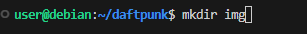
Edición de index.markdown con:
nano index.markdown
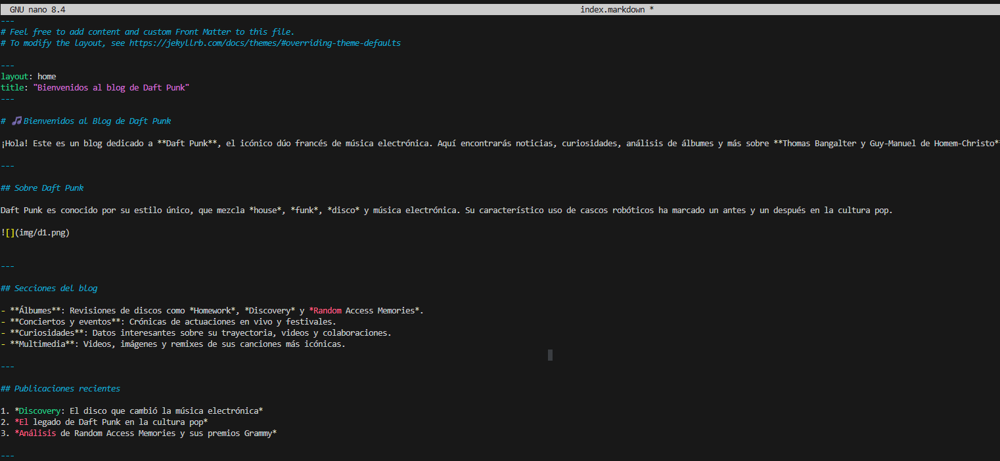
Guardamos los cambios.
Ahora envío la imagen a la máquina mediante scp (las proximas que necesitemos seran enviadas con este comando).
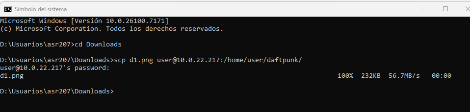
Edición de about.markdown mediante:
nano about.markdown
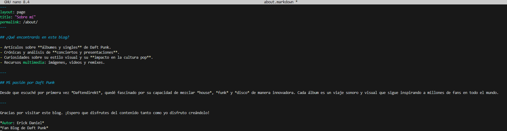
Nueva página
Creo una página adicional llamada albumes.markdown, dedicada a los álbumes del grupo.
Comando: nano albumes.markdown
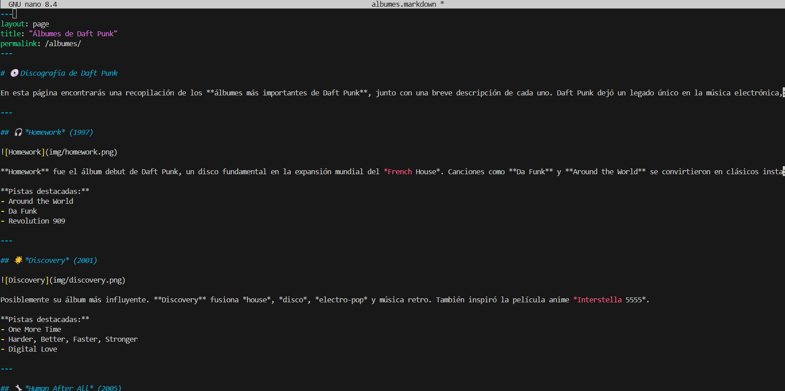
Guardo los cambios.
Creación de posts
Creamos los posts con nano.
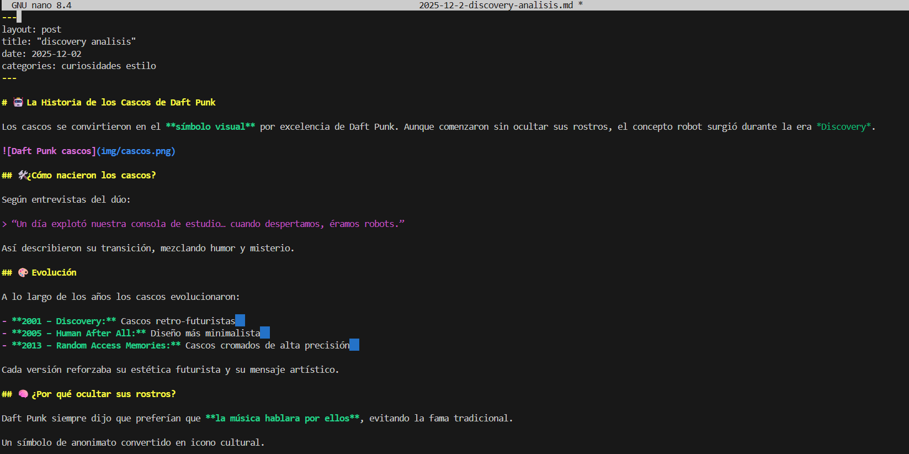
Guardo este primer post y creo dos más.
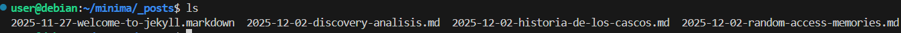
Prueba del sitio
Probamos el funcionamiento iniciando el servidor con la IP.
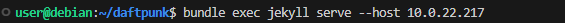
El sitio funciona correctamente.
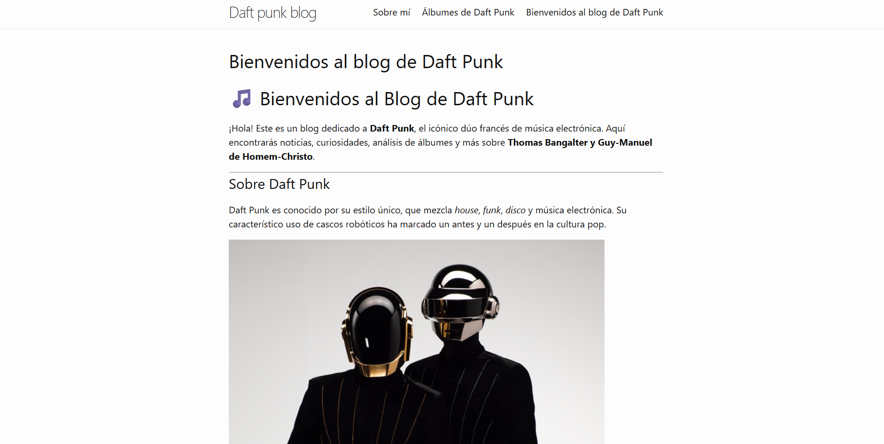
GITHUB PAGES
Procedemos ahora con el despliegue mediante GitHub Pages.
Convertimos la carpeta del sitio en un repositorio usando git init, añadimos el repositorio remoto y creamos la rama gh-pages.
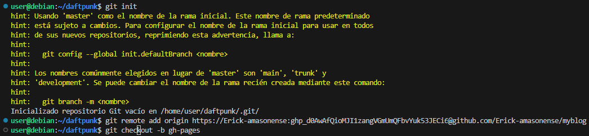
Finalmente subimos el repositorio local al remoto.
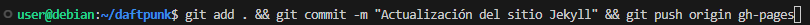